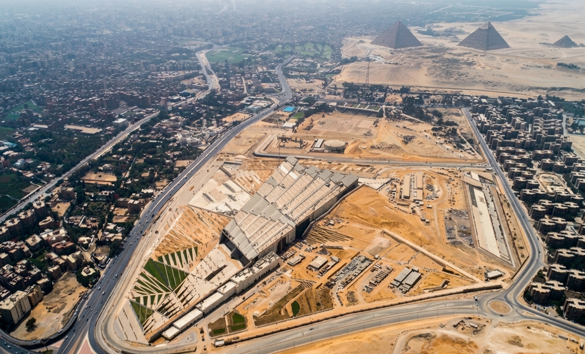
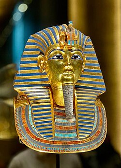
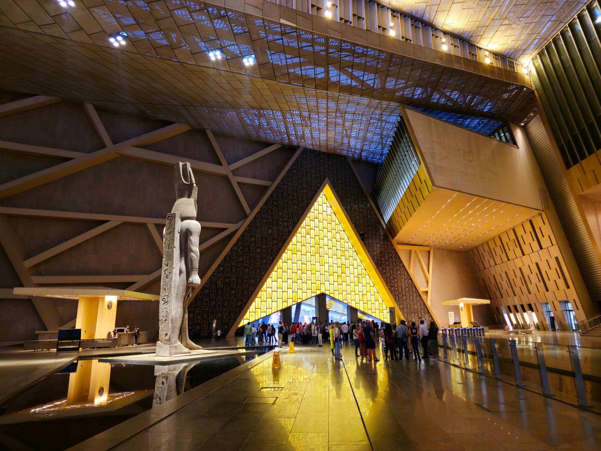
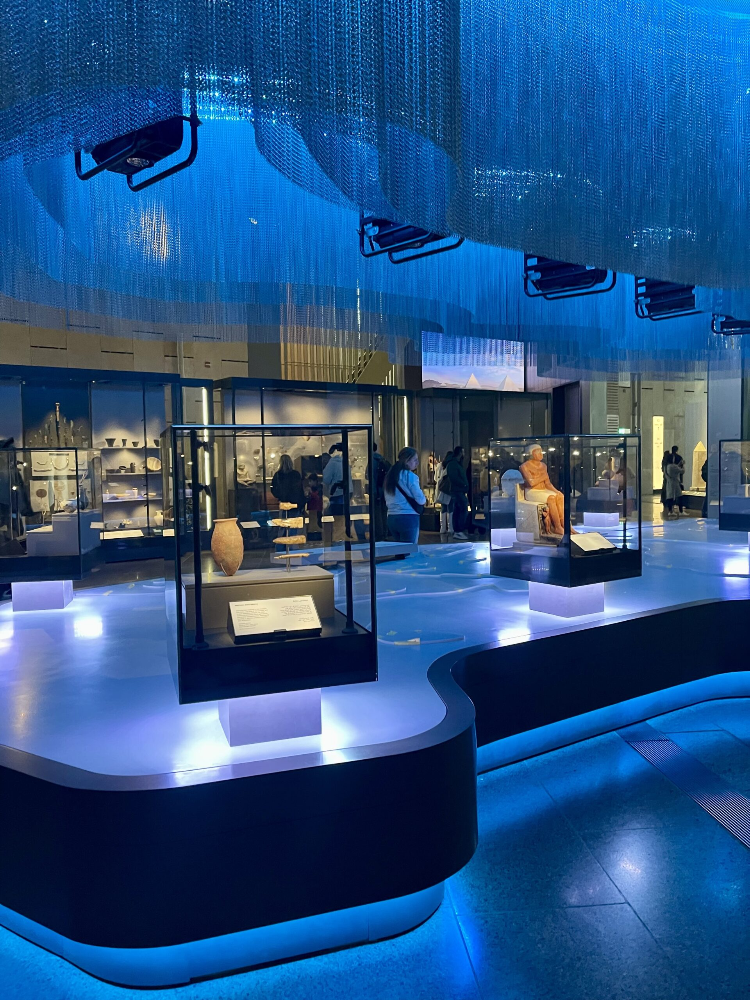

The idea for the Grand Egyptian Museum began in h1992, when former President Hosni Mubarak announced plans to build a new museum that would collect ancient artifacts scattered throughout the country. The museum was built to replace the outdated and overcrowded Egyptian Museum in Tahrir Square, Cairo. It serves as a modern hub for tourism, research, and conservation. It was announced in 1992, with the foundation stone laid in 2002. Construction began in 2005 and was completed in 2023 at an estimated cost of over $1.2 billion. The museum is located on 117 acres (500,000 m²) of land near the Giza Pyramids. The built-up area spans 167,000 m². The north and south walls of the museum are directly aligned with the Great Pyramids of Khufu and Menkaure.


The museum contains more than 100,000 artifacts distributed across 12 main permanent exhibition halls, as well as several other important halls. As the Egyptian Egyptologists (M. A.Eissa & A. el-Senussi) claim, this is “a new version of the (Pharaonic) ancient Egyptian museum”. These galleries cover about 18,000 square meters and display over 24,000 artifacts in chronological order, spanning from the Prehistoric era to the Roman period ( 3100 BCE – 400 CE ). The Grand Egyptian Museum features 12 main, chronologically organized exhibition halls covering 5,000 years of history, along with a massive Grand Hall, a multi-level Grand Staircase, and dedicated Tutankhamun galleries. The museum acts as the world's largest archaeological museum, hosting over 100,000 artifacts upon full opening, with highlights including the 83-ton statue of Ramses II.
The building’s design is inspired by the three pyramids and features a 3-dimensional, triangular-patterned façade. It features a large translucent stone wall that glows at night. The north and south walls of the museum align directly with the Great Pyramid of Khufu and the Pyramid of Menkaure, bridging the 4,500-year gap between the ancient site and the modern structure. The project is certified to have sustainable, eco-friendly features, including natural cooling and lighting, with 62% energy savings compared to conventional standards.


The interior design offers a unique cultural and educational experience, supported by the latest technologies such as digital displays and augmented reality, with organized paths that allow visitors to wander easily and smoothly, and an ideal environment for preserving the artifacts. The Grand Egyptian Museum is an exceptional encounter between timeless heritage and modern innovation.